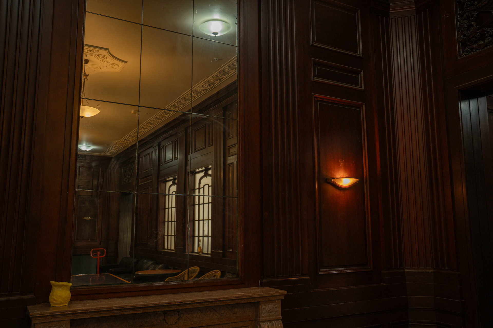
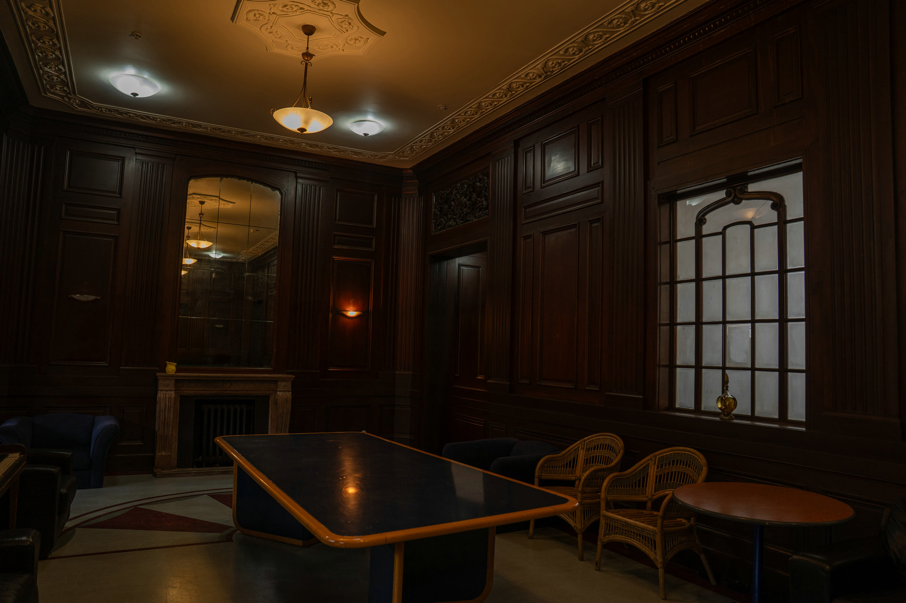
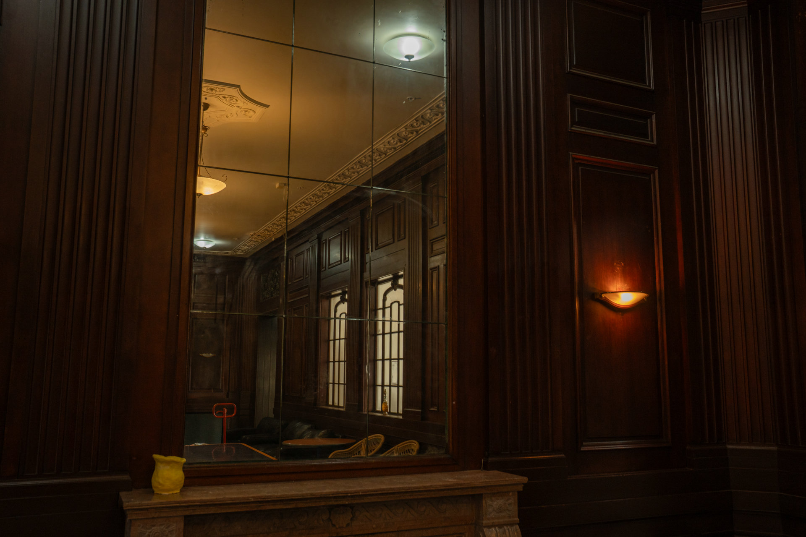

An intimate setting
Old-world detail for focused gatherings
Originally the station's Ladies' Waiting Room, this beautifully preserved space is defined by deep timber-panelled walls, a built-in fireplace and an ornate classical chandelier.
Its quiet sophistication makes it equally effective for private meetings and preparation, while its film-ready character has drawn period, fashion and screen productions.
Best suited to
Meet, prepare, produce
- Small meetings and private gatherings
- Interviews and indoor filming scenes
- Bridal or VIP preparation
- Vintage and editorial photography
- Client consultations and planning sessions
Inside the room
Timber, warmth and original detail





Plan a viewing
Consider the room for your gathering
Tell the team how you would like to use the space and arrange a time to see it.